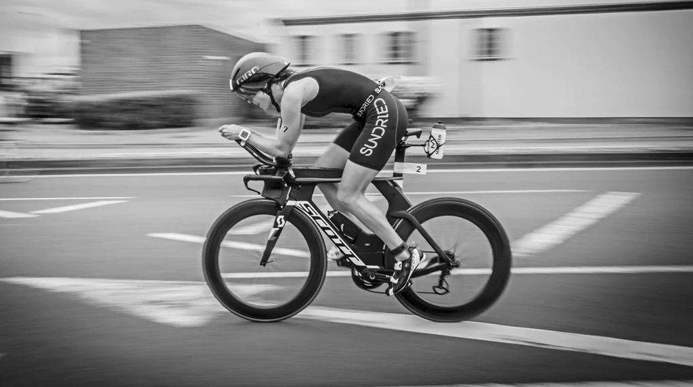

Rower
- 
-
Etap rowerowy w triathlonie stanowi drugą z trzech dyscyplin, testując kondycję i umiejętności techniczne zawodników na dwóch kółkach. Trasa rowerowa może różnić się w zależności od dystansu triathlonu, ale zazwyczaj obejmuje zarówno tereny płaskie, jak i pagórkowate. W trakcie tego etapu zawodnicy muszą skupić się nie tylko na pokonywaniu odległości, ale także na strategii zachowania energii. Jazda na rowerze wymaga sprawnego operowania przerzutkami, utrzymania równowagi i odpowiedniego taktowania tempa, mając na uwadze zarówno płaskie odcinki, jak i podjazdy. Triathloniści korzystają z rowerów szosowych, specjalnie dostosowanych do zawodów, aby zminimalizować opór powietrza i umożliwić szybką jazdę. Etap rowerowy w triathlonie to czas, gdy strategia, technika jazdy i wytrzymałość fizyczna stają się kluczowymi czynnikami osiągnięcia sukcesu w zawodach.